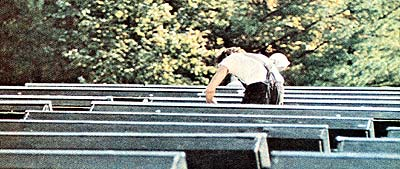
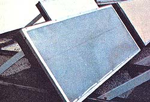
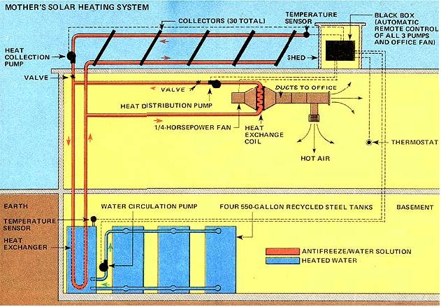
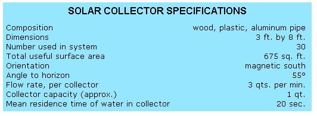
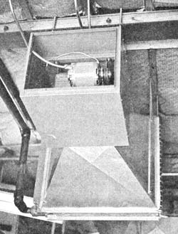
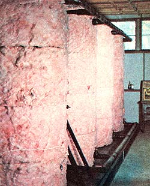

Mother's Solar Heating System
The inner workings and explanations of this alternative energy system, including diagram, specifications, photographs.
May/June 1976
HOW IT WORKS:
It's been almost a year since MOTHER set out to warm 1,600 square feet of her editorial office space with the sun . . . and-as we reported on page 100 of our last issue-that original goal is now a reality. Today, MOTHER's editorial department is (at least in part) solar heated. And we're tantalizingly close to using the sun to supply a full 100% of the Btu's we need to warm that 1,600 square feet right through the winter!
The move to "sun power" began back in July 1975 when four Georgia Tech students-John Hansell, Jeff Sheppard, Scot Iseman, and William Bruning-began the conversion. By the end of the summer, some 30 solar collectors (with a total surface area of 675 square feet) sat atop the building in which MOTHER is housed. Then, that fall-as the college foursome started back to campus-MOTHER staffers Dennis Burkholder, Joe Lane, and Bob Pace took over. Aries Engineering, a Gainesville, Florida firm with expertise in the field of solar heating was also retained as a consultant.
What we eventually got for our time, effort, and money was a conventional, forced-flow (active) heating system in which thermal energy (warmth from the sun) is gathered in the rooftop collectors. This heat is then absorbed by 45 gallons of collector fluid (a 1:1 mix of Prestone and tap water) that is constantly circulated between the collectors on the roof and four recycled 550-gallon storage tanks in the basement. Once downstairs, the antifreeze/water mixture passes through a heat exchanger located inside one of the 550-gallon tanks . . . and, in this way, warms the water held in the large container. A pump then circulates water from the first tank into the other three storage units. This keeps the 2,000-plus gallons of water in the four tanks at a fairly constant 110° Fahrenheit.
In addition to passing through the basement heat exchanger, some of those 45 gallons of hot (usually 130° F) antifreeze/water solution can also be shunted from the rooftop collectors to a second set of heat exchange coils hanging from the ceiling of the 1,600-square-foot office that we wanted to heat. Here, a 1/4-hp fan blows air past the copper coils into ducting that routes the resulting warm breeze to vents throughout the editorial department. An ordinary thermostat automatically turns the fan on and off.
As you can see from the accompanying diagram, our solar heating system contains a total of three pumps: one which forces the Prestone/water solution around and around between rooftop collectors and basement storage tanks, another that pushes some of the same fluid past the fan in the editorial department, and a third which circulates the eight tons of stored water back and forth among those four downstairs tanks. The operation of the three pumps is coordinated by an electronic "black box" located in a shed next to the roof-mounted collectors.
This control box constantly monitors inputs from three sources: [1] a temperature probe on the upstairs collectors, [2] another probe inside one 550-gallon tank in the basement, and [3] the office thermostat. Whenever the temperature of the collector fluid exceeds that of the basement water by five degrees or more, the box comes alive and tells its solenoids to flip on both [1] the rooftop collector pump, and [2] the basement circulation pump. In this way, the heat which has begun to accumulate in the 45 gallons of collector fluid is automatically transferred to the storage tanks downstairs. (Conversely, in the evening-as the antifreeze solution begins to cool down-the black box "remembers" to turn off the same two pumps.)
The office thermostat has a job to do too. It "watches" the air temperature around it and signals the black box whenever that temperature dips below 68° F . . . thereby causing both the basement pump and the office pump (the one which draws hot collector fluid to the first floor fan) to switch on. This part of the system can operate at any time during the day or night.
All right. The office fan-and the two pumps controlled by the office thermostat-can be turned on at any time . . . but the basement storage tanks can only be "charged up" during clear days, when the collectors are actively accumulating solar energy. So what happens when it's cloudy? Well, if the overcast is really heavy, the water in those 550-gallon drums won't be recharged enough to maintain its normal 110° F. And the system, naturally, will start to run down.
Of course, it does take a period of time for eight tons of water to cool appreciably (especially when the mass of liquid is completely surrounded by thick insulation). As things now stand, however, three straight days of cloud cover can all but put MOTHER's solar heating system out of commission.
Fortunately, we haven't experienced any system shutdowns due to weather just yet. In fact, although late winter was particularly chilly this year down here in the mountains of North Carolina, there's hardly been a day since our solar conversion went into operation that MOTHER's editorial offices haven't received some Btu's from the rooftop collectors. Trouble is, our system doesn't now provide all the therms needed to keep those 1,600 square feet of office space cozy-warm. In order to keep the environment livable on cold days, we are having to supplement the solar heating system with our old natural gas setup.
This isn't to say that the solar collectors aren't doing their job, or that our conversion's storage capacity is inadequate. The Btu's are there (comfortably stored away in the basement) . . . it's just that they aren't being tapped fast enough by that 1/4-hp office fan. At this point, too few cubic feet of air are being routed past the first-floor heat exchange coils to really do justice to the system. And as a result, the efficiency of the delivery end of the system has been (to say the least) low.
Mind you, we have other factors working against us as well. Our offices' concrete block walls, for instance, retain warmth very poorly . . . and the large expanse of single-pane windows along one wall pass heat like the proverbial sieve. The system's efficiency did take a quantum jump upward recently when Dennis Burkholder installed some new doors and partitions that keep the editorial office Btu's where they belong (rather than letting them escape down the hall) . . . yet, to really take advantage of our solar conversion's potential we should [1] lower editorial's ceiling by at least four feet and [2] trade that 1/4-hp fan-and the pump which pushes heated fluid past it-in on a bigger unit.
Nope, this isn't MOTHER's answer to her own or anyone else's heating problems. The present installation still needs some tuning up and, anyway, we like to think of it as a stopgap measure designed to tide us over until we can find a way to use a whole slew of alternate-technology ideas-wind turbines, Minto wheels (maybe), passive solar heating systems, etc.-to supply all of MOTHER's power needs. The system we have working, then, should be thought of only as a step in what we hope is the right direction.-KT.
|
 Solar collectors face magnetic (rather than ""true') south in order to reach max. efficiency in early afternoon. |
 Without thick fiberglass insulation, the 1101 water in these 550-gallon tanks would not stay warm at night. |
 Ceiling-mounted fan (motor partially visible) blows air past copper coils of heat exchanger, into ducting. |
|
 In the basement, a 1/4-hp tank circulation pump moves water between storage drums at the rate of 39 gal./min |
 |
 |
|
 |
|
|